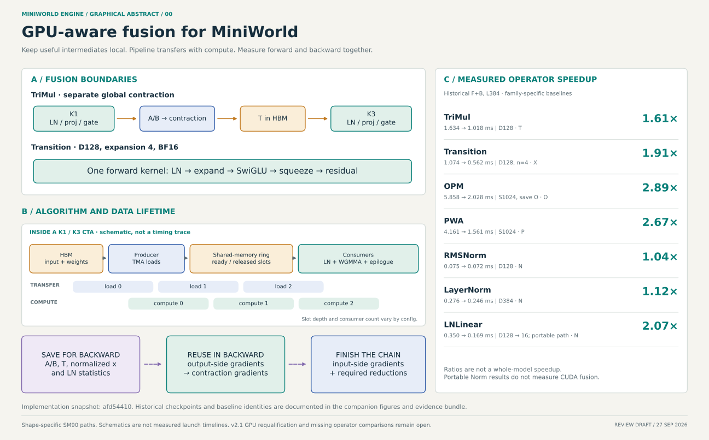
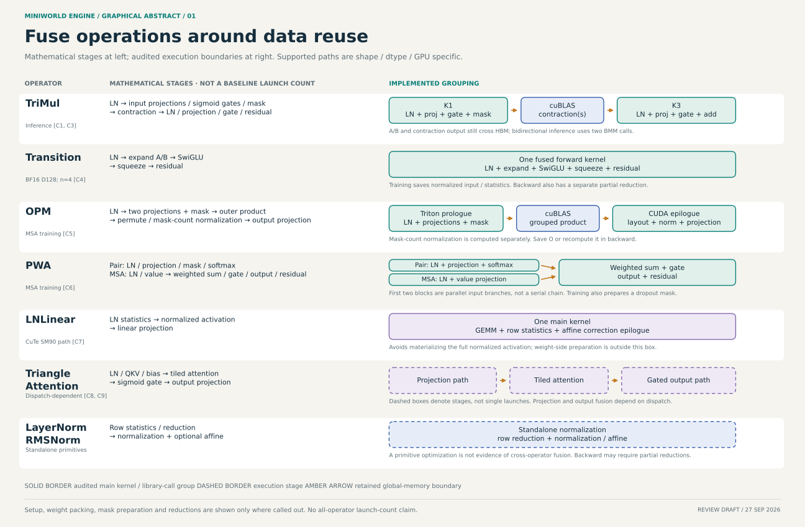
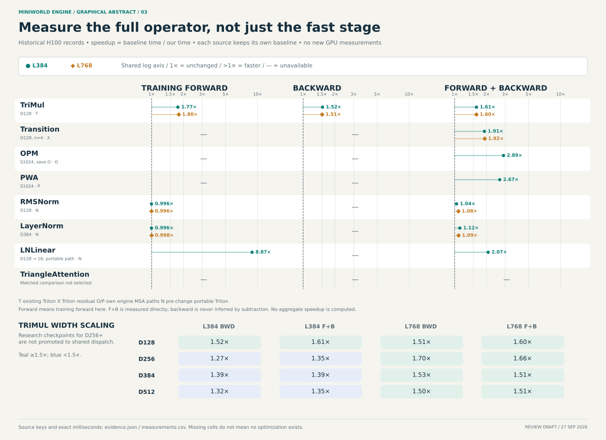

융합 지도, TriMul 내부 처리, 연산별 측정을 한 흐름으로 연결한 초안. 확대 가능한 SVG와 편집용 데이터, 4페이지 PDF를 함께 제공한다.

메인 구성안. 오른쪽은 각 계열의 과거 기준 구현 대비 F+B 배속이며, 전체 모델 배속을 의미하지 않는다.

실선은 확인한 main kernel/library-call 묶음, 점선은 하나 이상의 launch가 가능한 stage다. PWA의 pair/MSA 입력 branch는 병렬 관계다.
수식 → 실제 실행 경계 → CTA 내부 overlap → backward 저장값의 수명. 시간축은 원리 설명용이며 실측 trace가 아니다.

FWD는 학습 forward다. 추론 수치로 대체하거나 F+B에서 빼서 backward를 추정하지 않았다. TriangleAttention의 matched 비교는 이번 bundle에 포함하지 않았다.
afd54410
그림의 대표 shape 외에도 수집한 모든 행을 제공한다. 전후 시간과 baseline을 확인할 수 있다. CSV 다운로드 · 수치·출처 SHA-256
수치와 코드 경계는 README에 설명했다. SVG 텍스트는 편집 가능하다. figure를 재생성하는 Python 스크립트와 evidence bundle이 같은 디렉터리에 있으며, 생성 작업은 GPU 없이 CPU에서 수행했다.